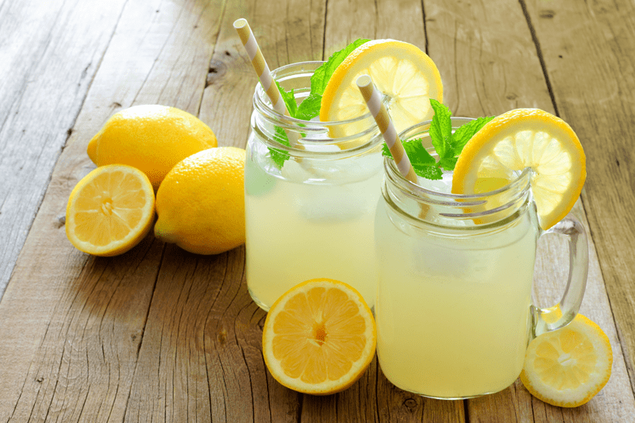

Loving Thy Liver Slushy
Loving Thy Liver Slushie~ raw, vegan, gluten-free, nut-free ~
This has become a favorite drink of mine. I start off with a full jar and drink it throughout the day. My goal is to drink 1/2 to 1 gallon a day. Keeping your liver healthy is so important. Loving Thy Liver Slushy is a wonderful drink that you can make to show your liver just how much you appreciate it! And since there are not any Hallmark cards for this occasion… this is the next best way to show your love. They say that the liver is the second most important organ in the body, coming in second only to the heart!

Dandelion tea alone can taste bitter and sweet all at the same time, lemon juice alone can cause massive pucker power, unsweetened cranberry juice… well, I don’t think I need to explain that one… but if you bring all these flavors together and add a little stevia, perfection! I actually love the taste of this refreshing drink and it makes me feel good knowing that I am sending a message of love to my liver.
Before I get to all the amazing reasons why this is good for you, I want to do a special shout-out for my new favorite straws!! At first, I wasn’t sure if I would like them, because I am a recovering straw chewing kind of gal. But I have been converted!
There are many reasons why I love them but one neat effect is, that they give is that as the cold drink travels through the straw, the stainless steel makes it seem even colder! Go “green”! Let’s take baby steps in our lives to reduce the waste that goes into our landfill. So instead of throwing away all those plastic straws, you can reuse these over and over and over… They add an elegant touch to parties too. They are angled and 8 1/2 inches long. Just love them!
Dandelion Tea
- Intake of this tea helps to stimulate the secretion of bile from the liver to the gallbladder. This increased secretion is useful for the digestion of fats.
- Helps maintain optimal liver function, kidney, and gallbladder.
- Dandelion tea aids in reducing various kinds of inflammations in the body. This includes inflammation in the gall bladder, bile duct, and all kinds of inflammations related to joint diseases like rheumatism and arthritis.
- Enhances detoxification by stimulating urine production and then replacing the potassium lost when due to the increase in urine.
- A great benefit to those suffering from diabetes type 1 and type 2.
- Excellent for treating disorders of the liver such as hepatitis and jaundice.
- Aid for blood purification and cleaning of the system.
- It’s very good for digestive disorders such as diarrhea and constipation.
- Helps to cleanse and improve skin appearance.
- Caffeine-Free!
Lemon
- Lemons are known to be a natural antiseptic, digestive aid and are full of vitamin C. Lemon, mixed with water is a very alkaline substance, and helps restore the body’s PH balance. Lemon’s high amount of vitamin C, acts as an antioxidant inside the body. The liver filters toxins from the blood; after the toxins are filtered out of the bloodstream, they turn into free radicals. Free radicals present a harmful effect on the liver; vitamin C from a lemon and water mixture counteracts the effects of free radicals. Lemons aid in digestion by ensuring that all food gets digested; sometimes food particles find their way into the bloodstream and then to the liver. This puts a heavy strain on the liver causing the liver to need detoxing. The digestive aid of lemon juice prevents food from entering the bloodstream. Lemon juice cleans the liver by aiding in the removal of toxins that can build up in the liver.
Cranberry Juice (unsweetened)
- Cranberry juice is rich in vitamin C, or ascorbic acid, which thins and decongest bile, allowing your liver to metabolize fats more efficiently. Vitamin C also boosts the production of glutathione, the key antioxidant your liver needs during both stages of its detoxification process. This nutrient is also an effective chelating agent, which means it binds to toxic drugs and metals to make it easier for your liver and body to remove them. Finally, vitamin C is an antioxidant, so it helps to protect the liver from free radicals that damage cells and tissues.
 Ingredients:
Ingredients:
Yields 1/2 gallon
- 1 bag Dandelion Tea
- 2 Tbsp fresh lemon juice
- 2 Tbsp cranberry juice (no sugar added)
- 1/2 lemon, peeled
- 1/2 tsp liquid stevia (or to taste)
- ice
Preparation:
- In a pitcher or 1/2 gallon mason jar (my favorite) place the tea bag, lemon juice, cranberry juice, and stevia. Fill with water and put in the fridge.
- I leave the teabag in the jar at all times.
- Throughout the day, you can just pour yourself a tall glass of this tea and enjoy or you can take it to the next step, which I thoroughly enjoy.
- In a blender, pour in 8 oz of tea mixture, ice, and 1/2 of a peeled lemon. Be sure to remove the seeds from the lemon and to peel it. Leave as much as the white pith on the lemon as possible, it is so good for you.
- Blend to a nice slushy consistency. Pour and enjoy!!
© AmieSue.com